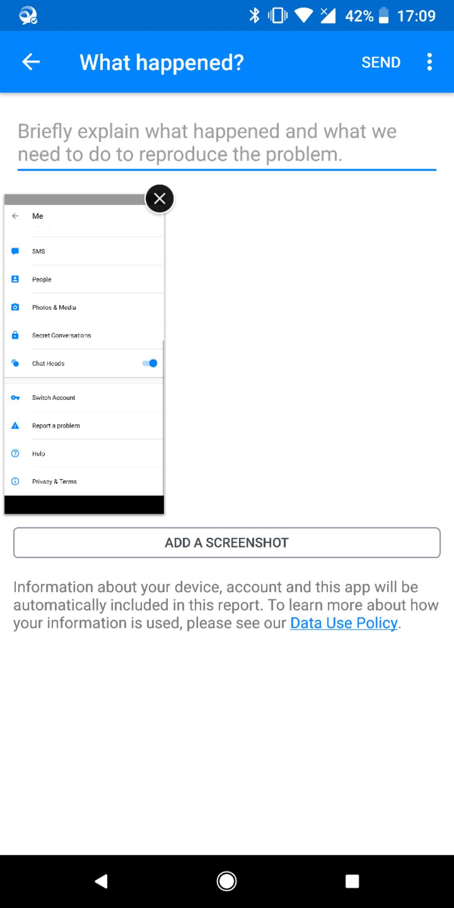

0x00 Requirements background
When an application released and get used by customers, crashes and ANRs are usually the most annoying issues for developers, it's hard to get the specific context of the entire usage.
Usually for a wide used application, it is very important to have a feedback/help function. For a more modern way to detect where the issue is, logs and context are must. They can help developers find out how to reproduce the issue, if an issue is reproducible, in most cases it's much more easy to fix the issue or at least protect it from getting crash.
Currently, we have serval ways to get logs from for example, user feedback(send problem report)\Google Play console\Splunk data monitor. However, when a problem is sent with screenshots and descriptions, it's more easy to understand what an issue is and what are the bad behaviors.
0x01 Common solutions
To get user upload screenshots, we can have serval ways to do this. We can screenshot our own application and send it when user send problem report, or ask user to upload manually.
For summary, I have investigated serval other applications and find there are these ways to do so:
1. Send feedback with auto screenshot
Examples
- Facebook/Messenger/Instagram

How to
When user choose to send feedback or problem, add a photo selector for user to select photos that need to send.
For user who want to send problem report, user are supposed to input issue description and select a photo.
2. Show send feedback hint when user screenshot
Examples
- Snapchat
How to
To get this notification when user screenshots, we need to register file observer to detect when user takes a screenshot.
When this popup windows shows, we need to add some actions on it, like edit, send problem report, share..etc.
0x02 Comparison and conclusion
The first way is more moderate and acceptable by users, when user choose to send problem reports, they can choose to add descriptions or screenshots if they have.
The other solution is more convenient, when user take screenshot inside an application, they might want to share, or save for future usage, or maybe they are willing to send problem report.
In conclusion, I think, in production mode, or released applications, the first solution is better. While for alpha users/tester/developers, the second way is more convenient to use.